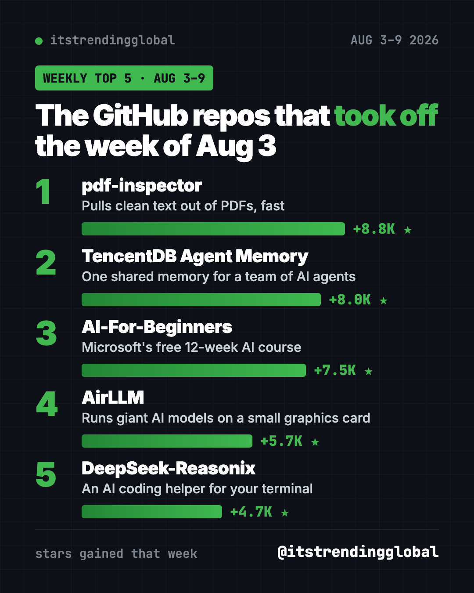
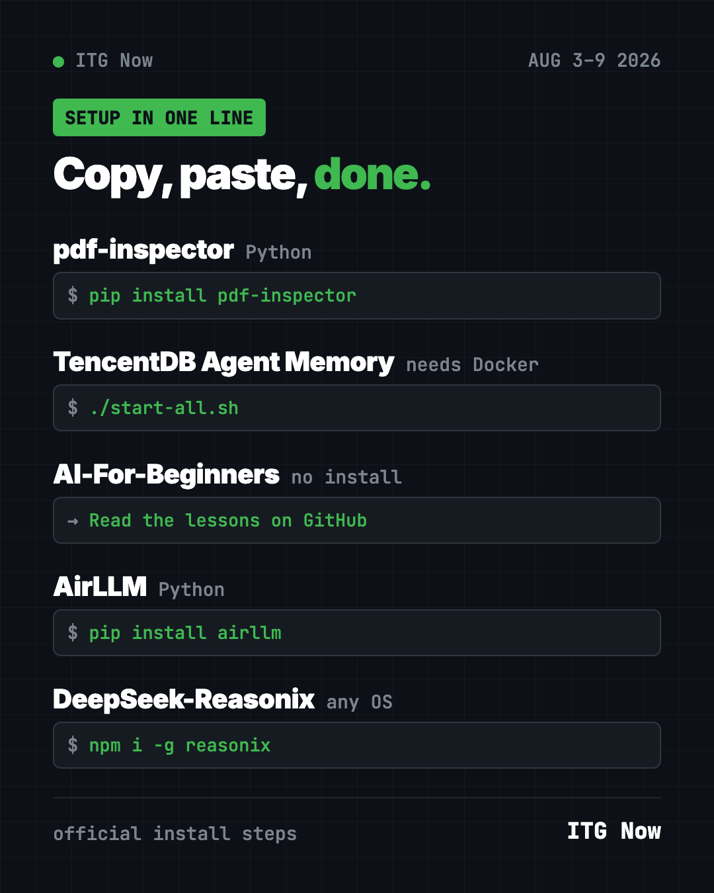

Home › Tools and repos › GitHub trending this week
Trending GitHub Repos This Week: Aug 3, 2026 Top 5
- Published 15 Oct 2026
- Updated 16 Oct 2026
- 7 min read
- By the ITG Now team
In this guide (9)
- Key takeaways
- Trending GitHub repos this week Aug 3 2026 at a glance
- 1. pdf-inspector: get the text out of any PDF
- 2. TencentDB Agent Memory: one memory for a team of AI agents
- 3. AI-For-Beginners: Microsoft's free AI course
- 4. AirLLM: giant AI models on a small graphics card
- 5. DeepSeek-Reasonix: a coding helper in your terminal
- Which one should you try first?
- FAQ
Trending GitHub repos this week Aug 3 2026, in one line: a fast PDF text reader from Firecrawl took first place with +8.8K stars. Right behind it came a shared memory hub for AI agents, Microsoft's free AI course, a way to run giant AI models on a small graphics card, and a coding helper built around DeepSeek.
A GitHub star works like a bookmark. Below: what each repo does, who it's for, and the exact command to try it.
Key takeaways
- pdf-inspector led the week (Aug 3 to 9) with +8.8K stars. It pulls clean text out of PDFs in a blink.
- AI-For-Beginners is the easiest pick for non-coders. It's a free course you just read.
- TencentDB Agent Memory and DeepSeek-Reasonix are for people who already use AI coding helpers.
- AirLLM is for tinkerers with a graphics card who want big AI models at home.

Trending GitHub repos this week Aug 3 2026 at a glance
| Repo | What it does | Best for | Free? | Setup |
|---|---|---|---|---|
| pdf-inspector | Reads PDFs and turns them into clean text | Anyone with piles of PDFs | Yes (MIT) | One command |
| TencentDB Agent Memory | One shared memory for many AI agents | Teams using AI helpers | Yes (MIT) | Docker, a bit techy |
| AI-For-Beginners | 12-week, 24-lesson AI course | Total beginners | Yes (MIT) | None, just read |
| AirLLM | Runs huge AI models on a 4GB graphics card | Hobbyists with a GPU | Yes (Apache-2.0) | One command plus code |
| DeepSeek-Reasonix | AI coding helper for your terminal | People who build things | Yes (MIT), AI model may cost money | One command |
Star gains are for Aug 3 to 9, 2026. Totals were checked on GitHub on October 16, 2026.
💡 Tip: The "terminal" is a text window for commands. Mac: open Terminal. Windows: open PowerShell. Paste, press Enter, wait.
1. pdf-inspector: get the text out of any PDF
Stars: +8.8K this week · about 19.7K total
What it is: A small, fast tool from Firecrawl. It checks if a PDF is real text or just a scanned picture. If it's text, it pulls the words out and turns them into clean Markdown, a tidy plain-text format. The README says it handles text PDFs on your own computer in under 200 milliseconds.
Who it's for: Anyone who feeds PDFs to ChatGPT or Claude.
Everyday use: Turn a 40-page bank statement or lease into clean text you can paste into an AI chat and ask questions about.
Install it: You need Python. Copy and paste this:
pip install pdf-inspector
Let Claude or Codex do it:
Install pdf-inspector from github.com/firecrawl/pdf-inspector and turn report.pdf in my Downloads into a clean Markdown file.
2. TencentDB Agent Memory: one memory for a team of AI agents
Stars: +8.0K this week · about 29.2K total
What it is: A memory hub from Tencent Cloud. AI helpers forget everything when a chat ends. This keeps chats, docs and code as shared memory for every agent on your team. It works with Claude Code, Codex, Hermes, OpenClaw and others.
Who it's for: Small teams where several people use AI coding helpers on the same project.
Everyday use: Your teammate's AI already figured out how your app's login works. Now your AI knows it too, without you explaining it again.
Install it: You need Docker and two sets of AI model settings. The README's steps:
git clone https://github.com/TencentCloud/TencentDB-Agent-Memory.git
cd TencentDB-Agent-Memory/deploy/global-images
cp .env.example .env
./start-all.sh
Fill in .env before the last line, then open http://localhost:8125 to see the panel.
Let Claude or Codex do it:
Set up TencentDB Agent Memory from github.com/TencentCloud/TencentDB-Agent-Memory, ask me for each model setting, and connect it to this AI helper.
See TencentDB Agent Memory on GitHub
3. AI-For-Beginners: Microsoft's free AI course
Stars: +7.5K this week · about 69.8K total
What it is: A free 12-week course with 24 lessons, quizzes and labs. It starts with the history of AI and moves on to neural networks, the idea behind modern AI.
Who it's for: Curious people with zero background. Also parents and teachers.
Everyday use: Do one lesson a week with your teenager and finally understand what "training a model" means.
Install it: Nothing to install. Read the lessons right on GitHub. Want a copy on your computer? Copy and paste this (it skips the translations, so it downloads faster):
git clone --filter=blob:none --sparse https://github.com/microsoft/AI-For-Beginners.git
Let Claude or Codex do it:
Read github.com/microsoft/AI-For-Beginners and make me a 12-week plan, one lesson per week, explained in plain words.
See AI-For-Beginners on GitHub

4. AirLLM: giant AI models on a small graphics card
Stars: +5.7K this week · about 38.8K total
What it is: A Python tool that loads an AI model one layer at a time. The README says that lets a 70B model run on a single 4GB graphics card, with no shrinking tricks. It also supports Macs.
Who it's for: Hobbyists who want to run big open AI models at home, without renting a cloud server.
Everyday use: Ask a big open model private questions, all on your own machine.
Install it: Copy and paste this:
pip install airllm
Let Claude or Codex do it:
Install AirLLM from github.com/lyogavin/airllm, check my graphics card or Mac, and run the smallest example from its README.
⚠️ Heads up: Big models mean big downloads. Check your free disk space before you start.
5. DeepSeek-Reasonix: a coding helper in your terminal
Stars: +4.7K this week · about 35.8K total
What it is: An open-source AI coding helper. You describe a task in plain words. It reads your project, edits files and runs tests. It can ask before each step, and you can rewind its edits. The README says you pick the AI model.
Who it's for: People building apps or websites who want a free Claude Code alternative.
Everyday use: "Add a dark mode button to my website," then watch it do the edits.
Install it: Copy and paste this:
npm i -g reasonix
On a Mac you can use brew install esengine/reasonix/reasonix instead. A desktop app is on the official download page.
Let Claude or Codex do it:
Install Reasonix from github.com/esengine/DeepSeek-Reasonix and help me connect it to a DeepSeek API key.
See DeepSeek-Reasonix on GitHub
Which one should you try first?
- You just want to understand AI: start with AI-For-Beginners. No setup at all.
- You fight with PDFs: grab pdf-inspector. One command and you're done.
- You have a gaming PC: play with AirLLM.
- You code with AI every day: try Reasonix, then TencentDB Agent Memory if you work in a team.
Want the bigger picture? See the top 5 GitHub repos of August 2026 and August 2026 in AI. Or jump to the week before or the week after.
FAQ
What were the trending GitHub repos this week Aug 3 2026?
pdf-inspector (+8.8K stars), TencentDB Agent Memory (+8.0K), AI-For-Beginners (+7.5K), AirLLM (+5.7K) and DeepSeek-Reasonix (+4.7K).
Are these GitHub repos free?
Yes. All five are free and open source. Reasonix and TencentDB Agent Memory connect to AI models, and those can cost money.
Which one is best if I can't code?
AI-For-Beginners. You read it in your browser, and it explains AI from zero.
Do I need a powerful computer for AirLLM?
You need a graphics card with at least 4GB of memory, or a Mac. Bigger models also need lots of free disk space.
Keep reading

Trending GitHub Repos October 2026: The Top 5 So Far
The trending GitHub repos of October 2026 so far: a free Photoshop-style editor, an AI art studio, a big AI model for gaming PCs and more, explained.

Trending GitHub Repos This Week, Oct 5 2026: The Top 5
Trending GitHub repos this week Oct 5 2026: Matt Pocock's skills, the openGym workout tracker, e2e testing, HyperFrames video and claude-mem memory.

GitHub Trending September 28, 2026: Hindsight and Paperclip
GitHub trending September 28 2026: Hindsight, Paperclip, NVIDIA's OpenShell and a free 542-lesson AI course, with setup steps for each.